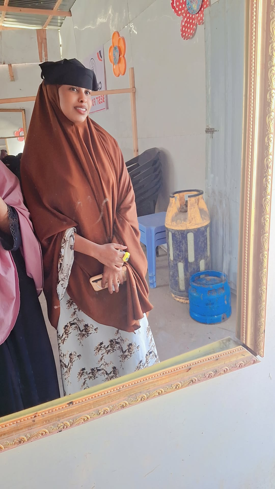
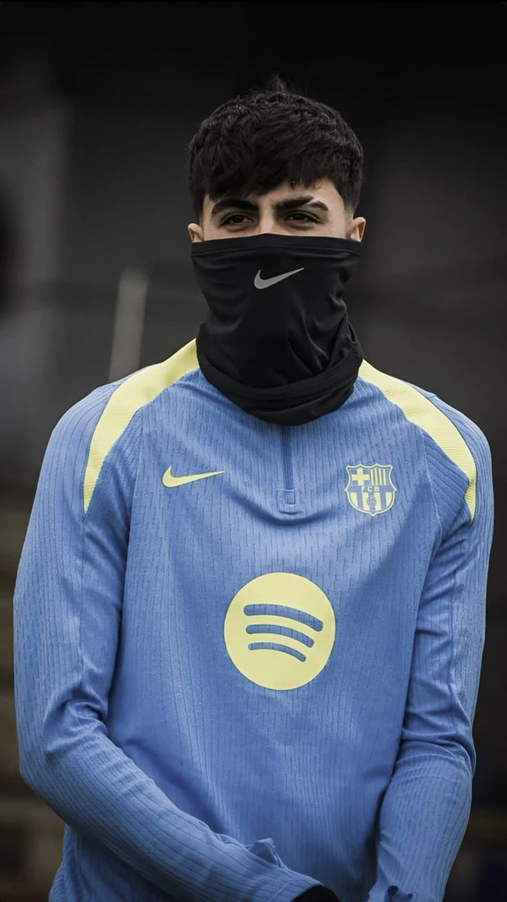

teamka howl-wadayasha
profile works
salma: Maamulka iyo Aasaasaha Shirkadda: Salma waa maamulaha guud ee goobta, waana qofka rasmiga ah ee dhisay isla markaana aas-aasay shirkadan (m.a). Waxay mas'uul ka tahay hoggaaminta iyo jihaynta guud ee ganacsiga.

nacimas: Maamul Ku-xigeenka iyo Madaxa Imtixaanada: Nacimas waxay shirkadda u qaabilsan tahay doorka maamul ku-xigeenka. Sidoo kale, waxay si gaar ah u maamushaa qaybta imtixaanada iyo qiimaynta shaqada.messi: Dhiirigelinta Kooxda (Astaanta Guusha): Messi waxaa loo arkaa qofka loogu dayan karo dhanka guusha iyo dadaalka (GOAT), gaar ahaan ahaan maamulaha madaama uu yahay laacibka ugu fiican dunida, wuxuuna dhiirigelin u yahay shaqada.

Agaasimaha Maaliyadda iyo Gacanyaraha Maamulka: Agaasimaha Maaliyadda waa qofka si kalsooni leh u haya maamulkana u qaabilsan lacagaha iyo maaliyadda shirkadda, sidoo kale wuxuu u taagan yahay maamulka gacanyarihiisa si hawluhu u fududaadaan